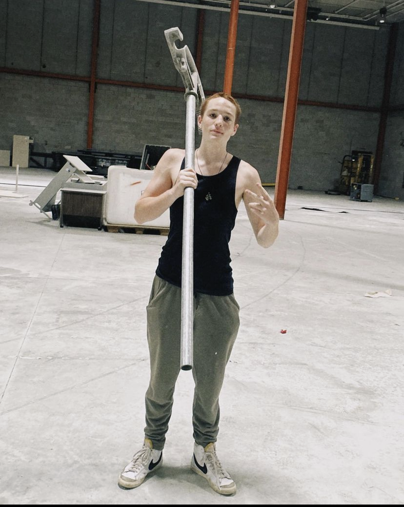

Pre-Storm Calmness
So, the situation is actually pretty simple and easy to explain/understand. The class just finished a stressful year of IB, and they all know that the next year is going to be their hardest year yet. So they make the most of of this Calm Before The Storm.
-
Sofe's Itinerary
Date:20/06/2023
Climate:Cloudy, Cold, and Rainy
Location:Plaza Cafe
So Sofe planned a whole Itinerary, a journey, mostly because she heard that Eitoku might be leaving the UAS and going back to Japan. The Journey started at a nice Cafe called Plaza Cafe. Timo, very uncharacteristically was the first one there, and the rest(Sofe, Alejandro[Ale], Eitoku, and Bruno) arrived shortly after. They ordered food.
The food- Eitoku ordered a salmon salad and a smoothie
- Timo ordered a chocolate milk expresso fusion and a brownie
- Sofe ordered Jam and Cheese Sandwiches and a coffee
- Ale ordered a croissant
- Bruno ordered a chocolate milk expresso fusion
Timo asked Eitoku what was the situation of him leaving, because Timo had just found out Eitoku might be leaving yesterday. Eitoku proceeded to explain that his parents want him to leave, but he doesn't want to leave, and so he might, or might not leave, it's all up to his parents really. Eitoku will be going to Japan in these vacations, but will he be coming back, or will he stay there, that is the question.
Then they proceed to talk about the movie Spiderman Across the spiderverse, apparently Sofe watched the beginning and she got bored immediately and stopped watching, Eitoku, Timo, and Ale (the people who watched the movie) where flabberghasted since they thought the movie was incredible.
After that they took these picrtures
They are in the Plaza Cafe.
The plan was to go to all destinations by walking, however this plan was interrupted by a weather phenomena called rain. So they decided to take a bus. While they were taking a bus, they all played arious hand-games, like "pistolita", one game where you have to guess how many fingers everyone in total will pull up, and another where you had to make your oponent have 5 fingers up. (I am aware that if you never played this games then you have no idea what I just said, but I can't do much more to explain.)
They arrived at the plaza de la independencia, they bought some snacks and entered Artigas' tomb.

Them in the Artigas Tomb
After that, they all go for a walk, they arrive at some shop that has a lot of video game merch aswell as other miscellaneous things like card games. Sofe thinks of buying a Dungeons and Dragons starter kit but Timo says that it's too expensive and it might be better to just learn how to play the game using online sources, so no one buys anything in this store, but they had fun seeing all the funko pops.
At the shop with merch and stuff.
After that they walk towards some other place, on the way there, Timo buys garrapiñadas. Then they arrive at some place where Juampi(Sofe's Boyfriend) is studying. Eitoku, Ale, and Timo go inside the place to see if they can find Juampi, but he was outside. So they all have a brief encounter with Juampi and some of his friends.
Then Bruno leads everyone, everyone follows him for a but until Timo realizes that Bruno is headed to no specific direction. So they all head to the next destination in Sofe's plan, a manga shop. They arrive at a building with a Cat Cafe, and they press doorbell and the entrance to an apartment is opened. Then everyone except Timo and Sofe go to the elevator. Sofe and Timo went up the stairs, but they went up 7 floors becuase Sofe was lost and Timo followed her. Eventually they all arrived to the comic shop and saw many comics. They also saw some innapropiate comics and lauphed at them for like 30 minutes, Ale then bought a comic and they all left.

They looks at some manga.
After some time, they leave, Bruno goes to a drug shop to buy something. Eitoku joins him, Eitoku thinks of buying cool lighter but he decides not to buy it. Bruno buys something called a "bong", some kind of flask were you can fill it up with water and use it to smoke.
Bruno buying stuff
Then they go to Subway, it's Eitoku and Timo's first time in Subway, they order some and it's they think that it's pretty good. However, Eitoku is tired because yesterday he watched the spiderman movie, and he is also on some medication that makes him tired. So after eating he immediately fell asleep. While Eitoku was asleep, Sofe was telling everyone about how she was really good at flirting, before she was with Juampi, she was basically the flirt master.
She was so good at flirting and getting dates. Friends used to ask her to write messages that would get them a date. According to her, she never failed once.
Timo drew a something for Eitoku and hid it in his phone.
Eitoku sleeps
After they all finished talking, they went out, and they headed to their final stop, the Torres Garcia museum. On their way there, Bruno tries out his new bong, and Eitoku tries it out aswell. Apparently a bong gives you a bigger high.
Bruno and his drugs
After that, they head to the plaza de la independencia where they see that there is a school fieldtrip going on. Then they go a library where they see familiar books such as persepolis and maus. There is a man working for Unicef that once had a class with Sofe, and he is kind of a creep so Sofe puts on Eitoku's hoodie to hide from him.
After that, they go to the Torres Garcia Museum, where Eitoku receives a notepad as a present from Sofe. Then they go to the art gallery, they sit down, and they talk about random things.
Eitoku says that it is highly probable that he will be leaving Uruguay because his parents really want him to. How saw, Eitoku writes everyone a poem. Eitoku, Ale, and Timo go to a forbidden floor, but then they go back because there was a guard there.
Sofe films Timo filming Sofe
After that, they go to a church, they roam, they sit down, and then they leave.
Eitoku sat down in the church.
After that, they decide to go to McDonalds to get a McFlurry, Bruno says "Noooooo, you know how much sugar they put in those things". Which is ironic because Bruno was literally smoking out of the Bong. They Ale, Eitoku, and Timo order a McFlurry and eat it while Bruno smokes.
Drugs and McFlurrys
Alex texts Eitoku, apparently, Mati, Alex, Chad, Martina, and others are going to watch the new flash movie, and after that they might go to a chinese resaurant. Eitoku thinks about going, but he is way too tired, and apparently Sofe knows that the flash movie is very bad. Eitoku thinks of skipping the movie and then going to the chinese restaurants. Timo thinks of joining, but he slept 4 hours and had spent the entire day walking. Eitoku also had to pack up tomorrow since he was leaving to Japan.
So Eitoku went home to rest, Sofe and Timo went to Bruno's house, and Ale found a way to get to his house.
Sofe and Bruno were the first to visit the Nario Residence(Bruno Nario's House). It's really close to Fede's house. Sofe and Bruno go upstairs. They play chess for a little bit and eventually they all leave to their respective homes.
Alex, Martina, Chad, Mati, Chiara, and others didn't watch the movie at the end, but they did go to the chinese restaurant.
The Chinese Restaurant (Video by Chiara)
Location:The United States of America
So back here, Corey's car hydroplaned and it went off-road, the fire department came.
Him and his sister's boyfriend had tried to pull it out but it didn't work out.
Megan was in the car and she recorded somevideos and took some photos. After a while, Julia came to pick up Megan.
Megan's videos about the car situation.
Sebas left Uruguay and went to another country (I don't remember which one). Sebas will have a lot of fun in these vacations, he will do many things.
-
Date:24/06/2023
Climate:?
Location:Uruguay - United States
Alex goes to Mexico
-
Date:16/06/2023
Climate:?
Location:many
Eitoku goes to Japan
-
Date:21/06/2023
Climate:Cloudy and Cold
Location:Bruno's Area
Bruno goes for a long walk, and he takes pictures of cats and many other things, here are the aformentioned pictures and videos.
The pictures.
-
Date:22/06/2023
Climate:Cloudy Rainy
Location:Greensboro, the United states.
Timo makes a music sheet of his song "The Falling Sea"
The fallig see by Timo
Megan and Corey go to investigate some abandoned place, but a guard catches them. Corey had reverse parked, and the officer said people only reverse park when they want to get away quickly. Luckily, the officer didn't call Megan's parents, apaprently Megan tells nothing to her parents, not even what happened with Corey.
Fede says that a guy had been hitting on him for the past 2 days, and now suddenly that same guy is ignoring him, how rude of him.
-
Date:24/06/2023
Climate:?
Location:Uruguay - Unite States
Timo goes to the United States to visit his friend called Lucio. Timo makes one of Lucio's friend believe that Timo's name is Sean.
-
Date:06/07/2023
Climate:Cloudy slightly rainy
Location:The United States
Timo and Lucio go play ping pong at night, he sends a video to The Grass Starers and Megan sends her video of the Daily Mood Gang exploring an abandoned school. Also the Daily Mood Gang is now actually called the Swamp Dwellers
Worth pointing out that the events in the following video did not occur today, the video was sent to The Grass Starers today.
Swamp Dweller adventures
-
Date:11/07/2023
Narrator's Note
SO at this point I have missed a lot things, because of course, I am not with my friends, I am in my own isolated adventures. But through Instagram I have seen where some people are, so I will just make a list of where people are. Even if I have already mentioned them previously, just to clear things out.
Where they areMartina and Matias:They are in the United States LA
Chad:The United States in California
Alex:Mexico
Sebas:Germany
Timo:The United States New York.
Fede:
Chiara:Also in the united states
By the way things are going, I doubt that there will be many recorded events in this chapter. Not because events didn't happen, but becuase it's immposible to record them.
Sofia Ugarte's Birthday
-
Date:12/07/2023
Climate:Irrelevant
Location:Daniels Location
At 4:32, Daniel sends an interesting message through the class groupchat.
Daniel's Dream
-
Date:11/07/2023
Climate:Unkown
Location:The United States of America - Los Angeles
-
Date:13/07/2023
Climate:Unkown
Location:The United States of America - Los Angeles
Martian buys some milk tea, she crosses paths with a homeless man who really wants the Milk tea, Martina offered him water but he refused. Later the Tea got stolen by a weird lady that she had met twice before. Apparently the lady was chasing her.
It's also Sofe's birthday.
-
Date:15/07/2023
Climate:Unkwown
Location:Spain
Alejandro gets drunk and he texts the Purple Gang
Also, Lucio and Timo eat some ramen, clean some windows, and they make a special and toxic drink that they named "The Wake Up". This happened because Timo decided to make some chocolate milk, but then Lucio started adding stuff as a joke, but then they started adding a lot of random things like pepper, salt, olive oil, and other things
Window cleaning and people killing
Ramen and the most lethal chocolate milk
-
Date:17/07/2023
Climate:Cloudy
Location:The United States
Lucio and Timo make ice-cream, except they weren't actually succesful.
They make ice-cream
-
Date:21/07/2023
Climate:Sunny
Location:Yale
Timo and Timo's friend Lucio Gonzales go to yale to see if Yale university is truly worthy of having them as students. The tour guide goes through a big part of the yale campus. They visit a big library, and the also visit a square shaped library, and some shapes aswell. However Timo and Lucio concluded that the university is overated and thus they won't apply. Timo later told Fede about his little trip in yale, and Fede said that he met Ioel in yale aswell, that's quite wild.
Timo also found a keycard in the floor which allowed him to access restricted areas of the yale enviorment. In one of these areas, Timo and Lucio had some discussion about self-driving AI and weather or not it should prioritise the driver or the most ethical choice.

Timo and Lucio Yale adventures
-
Date:26/07/2023
Climate:Sunny
Location:The United States Summerfield and Greensboro
Timo goes to visit Megan, when he arrives, Julia is with Megan at Megan's house. They soon go to downtown greensboro where they meet up with Samuel Yonitis and Iseiah. On the way there, Megan showed Timo her car Donatello, aswell as her driving skills. but Megan got lost so Julia ad to take over the driving. They go into an abandoned news company building, but they get scared because it's to dark, so Iseiah suggests buying a flashlight, and also buying spray paint so that Megan and Julia can try out their new tags.
Sam leaves them because he had to go to work and the rest go to get a flashlight and some paint. They got a cheap flashlight with good luminosity and a navy blue spray paint can.
When they go back, they meet with Benjamin, another member of the daily mood gang. They go to explore the building.
This time they go upstairs to the offices where there is human feaces everywhere, there is also cables, graffiti, and everything is trashed. Everyone does their graffiti tags many times. Timo is given the vlogging camera and he vlogs stuff, until Julia takes it and she starts vlogging.
They go into the server room, and then they go into a room upstairs and then they went to the roof of the building and everyone liked it a lot. After that they went to a room with some toxic smell near a door that said it must remain closed at all times. The smell left Iseiah and Megan with a headache, and Timo with trouble breathing. They collected souvenirs and then left that place.
They entered a place that had sunlight, it was a change in mood from all the dark and shady stuff they had encountered. After visiting that room, they left the building, and they deviated their path because they saw a police car.
.jpg)
.jpg)
.jpg)
.jpg)
.jpg)
.jpg)
.jpg)
.jpg)
.jpg)
Pictures Taken in the News building
After that, Megan followed Ben to a gas station, where Iseiah and Ben went to get slushies from Mc Donalds for everybody while Megan, Julia and Timo went to a Cemetery playground park. They had a gaga ball pit which Timo had played 2 days prior.
Iseiah and Ben arrive witht the slushies, and then they all leave to Megan's house, except Julia who has a curfew because she has a strict father. They watch the maze runner until Sam arrives with pizza. They all go into Megan's room for a moment to try out some mint inhaler stick. And in the short amount of time it took them to get back, Smores(Megan's dog) had ate what was left of the pizza.

Swamp Dwellers + Timo
After that they all went to eat burgers that Megan's father had prepared for them. They talked about many things like inside jokes that they have. One of them was that Julia was gay, there was another about Megan being super powerful and many more.
Then they went back to watch the maze runner. Iseah really wanted to watch the Maze runner while Sam, Ben, and Megan where wrestling and talking all the time. Then all of them except Timo started wrestling while Timo watched the show. After that, they got vanilla ice-cream. Then Ben left, and Sam left after they watched their favorite part of the movie (they skipped to that part) Sam left with Iseiah. Timo stays for a sleepover at Megan's.
Another thingBruno has been sending many song audio's to the purple gang groupchat, he has been making songs in ableton.
Timo took mini wrench and a radio as a souvenir.
At the very morning, Sebas told TImo that he was going to make a promise to Timo, then he told Timo he broke the promise. Timo never got to know what the promise was.
-
Date:27/07/2023
Climate: Sunny and really hot
Location: United States summerfield and greensboro
Sam arrives at Megan's house, they start searching for flashlights since they wanted more to better investigate the news building. Then Timo wakes up and Megan has to go to take a horseriding lesson. So she prepares her horse, she brushes it, and then she goes off to her lesson. On the way there Megan speeds, here is proof.

Sam records Megan speeding
Sam and Timo talk about random things like school and instruments until Megan finishes her lesson. They then go back to Megan's house where they eat quesadillas for breakfast and they wait for Julia to arrive. Timo and Sam play chess, where Sam got distracted by Megan in a call with Julia so he got destroyed. Julia arrived, and then Isaiah arrived, Isaiah said that last time they visited the news building, Timo's vlog was really good, and Julia's vlog sucked because she was all the time in her phone and she wasn't paying attention(Unfortunately the vlogging camera is way to old to qcquire the footage). And together in Sam's car they go to a new location.
This new location has a street called "Gay". And the Daily Mood Gang has a joke were Julia is gay. So Julia took a picture of herself with the sign, the abandoned place turned out to not be abandoned at all, it was simply in construction, so everyone went back to Sam's car and headed towards the news building once again. Isaiah got down to eat some teryaki chicken. The rest waited for him at the building.
They got there but they decided to once again go to target to buy flashlights, so Megan, Timo, Julia, and Sam went back to buy a flashlight. At the store, they all went to the flashlight isle but it was locked, they all tried to ask for help but they got ignored by the employees until Timo decided to go ask for help, and he got someone to open the flashlight locker. They got one and made their way back to the abandoned news building.

Julia next to the gay sign
Sam had to go work last time, so it was his first time properly exploring the place, everyone showed Sam the party room, and Sam found a huge tool that looked like a fortnite pickaxe, and he said that he was going to go back for it someday. After that, they all tried breaking a window with a fire hydrant. After that, they all went to Megan's house, since Same had to go to work, Isaiah also had to go to work, and Julia had to get home at 5 because her mom wanted to see her.
Sam with the pickaxe
On the way there, Corey asked everyone for the location of the a Croc that Sam had, but Sam did not want to give it back. Corey went to Megans house and waited for everyone there. Everyone arrived at Megans house and Timo got to meet Corey. The only one who wasn't at Megan's house was Ben because he was at the Gym. After that, Corey, Julia, Sam, and Isaiah said bye to Timo since they were leaving and it would be the last time they saw Timo.
Corey hadn't really spent any time with Timo which was sad because Timo thought he seemed like one of the coolest people. Isaiah said bye, Julia said bye, and finally Sam said bye. Same said "Our paths will cross again" Which is unlikely because Sam had never gone out of the United States.
Megan then talked with Timo a while about her life with the Daily Mood Gang, apparently they are always going to these abadnoned places and making graffiti everywhere. The Daily Mood Gang was an amazing group.
Then Megan drove Timo to the train station, on the way there, Timo told Megan how everyone in the Table Tube Gang was doing. And Megan's final message towards the Table Tube Gang was "Your all lame because you haven't done anything illegal".
-
Date:28/07/2023
Climate:Sunny
Location:Greensboro Downtown
The Daily Mood Gang goes back into the News and record building, and they take pictures which are later posted in Megan's instagram. This time Corey is there.
-
Date: 31/07/2023
Climate:Sunny
Location:Several Countries
Timo starts his way back to Uruguay.
-
Date:01/08/2023
Climate:Sunny
Location:Uruguayan American School
Orientation day has arrived, and the school has undergone some remodelations. There are also many new teachers. The upstairs secretary office got completely change, and everything just looks very different.
Megan tells a tale about the Daily Mood Gang, which has been renamed to Swamp Dwellers. They were at a watch store and the man in the counter asks how old Julia is, Julia says 16 almost 17 and the man scream-lauphs saying "We don't say 'almost' in my age". The origin of one of Megan's captions.
- Outlaw:Almost
- Man:*Screams*
Timo informs the WWC about the renovations in an attempt to reanimate the groupchat which had remained unused for over an year now. It was succesful, the conversation somehow lead to everyone making fun of unhealthy American consumable products.
-
Date:02/08/2023
Climate:Cold
Location:Salma's house
Chiara, Salma, Timo, Angie, and Martina are in Salma's house, and they talk about what they did in their vacations. Angie went to many places like Italy, Kroatia, Poland, England, etc. Martina went to LA with Mati and then trained with her horse. Chiara went to the US. Salma went to Mexico and the US. And Fabri arrived to Salma's house.
Then others started arriving, Sebas, Alex, Chad, Bruno, Lupi, and others arrive. So they play this game called contrareloj where you need to describe something and your partner has to guess it. Lupi tells Mati that he can beat Mati in swimming, Mati is lauphing becaung he has done swimming his entire life.
So Timo gave Sebas a bottle as a present. Then he gave Bruno some metal chopsticks that he had stolen from a restaurant.
After that, the WWC except Bruno go for a walk. All of them climb a tree, Timo scratched his hand and it started bleeding. They also saw some trees that you could climb by running up them, and Lupi climbed a straigh vertical tree by doing some insane maneauvers. Then everyone climbed a final tree, and they continued their walk.
They went to the beach. Alex, Chad, and Lupi were walking way more forward than Timo and Sebas. Timo and Sebas are contemplating the situation, how school is starting again, and how it's going to be really hard, but exciting. Timo and Sebas are the observers of the situation, they observe everything as it unfolds and give their opinion about it.
.jpg)
Cool people
Alex, Chad, and Lupi start running, Timo questions if Sebas and him should also start running, but sebas says that if they do, they would be sheep. So they don't run, but eventually they get too far and they start running. But then everyone else runs back, and Sebas stays there. Timo goes to him, and he discovers that there is a dead bird lying on the floor, they take pictures of the bird. After that, they talk about, money, sex, the system, capitalism, and how they hate it.
.jpg)
.jpg)
The seagull and Sebas
Sebas starts talking about how the rest of the people are all going fast through this walk, and they are not enjoying the atmosphere and the surroundings. This contrasts with Timo and Sebas who went slow and appreciatively of their surroundings, even finding the sleeping bird.
Then they reunite with the rest and go back to Salma's home while talking about All my Sons, the book. They also call an uber. So they went inside the Studio room. Salma's house consists of the main building and the Studio room with a bunch of instruments. The Studio room is unused, and now it has many mattresses. Sofe came while the others where taking a walk, and then Timo gave Sofe a dumbledore purple fan.
So Sebas and Alex leave, and Chiara goes to sleep. Sofe had wanted to do a debate with Dani for a long time, and the time has come. Sebas forgot the bottle Timo had given to him.
The Debates
AbortionThey both agreed that it depends on weather a consented to having a baby or she didn't
Subjectivity of BeautyBeuty is defined by culture and the current society, since there was a time where fat people where seen as beautiful because it was wealth, but now fat people are bad health. There are some subjective aspects like personality, but it's equally if not more objective, however the objectivity is defined by the culture, beliefs, and values, meaning that Objectivity is defined by Subjectivity. And thus it is technically all Subjective.
Can you have friends of opposite gendersSubjectivity vs Objectivity(The music was very loud and annoying)
Yes, but it's hard most times because you have to make sure that your friends aren't attracted to you because that would be weird.
Can your partner be friends with people the opposite gender.Yes, but once again one must make sure that it's a purely platonic relationship, Sofe has a lot of friend boys, but she considers her boyfriend Juampi to be "too attractive" to have friend girls so she doesn't trust girls to be Juampi's platonic friend. But if she knew 100% that a girl wouldn't be attracted then she would let them be friends with Juampi.
Alpha Females and Alpha MalesI didn't really understand this one
Alpha Male and Alpha Female, also you can luca blaming Mati for stealing his sock.
After that, they started all talking about Sofe's boyfriend, Sofe very clearly thinks her boyfriend is incredibly attractive and amazing, Bruno along with others agree with this immediately. But Dani didn't say a word, he instead asked for pictures and he criticized all the pictures, and then proceeded to ask questions that inquire about Juampi's intellect, which according to Sofe is also very high. Sofe caught on that Dani was either jealous, but Timo (who knows Dani ever since he was in nursery) knew that this is completely normal behaviour for Dani, and it shows no signs of jealousy.
After that, Bruno and Sofe just talked about random things while everyone made fun of Dani being jealous of Juampi. After that, they went to sleep.
Also Fede shared the following videos about his adventures in Korea
Fede in Korea adventures
-
Date: 08/08/2023
Climate: Cold and Sunny
Location: Uruguayan American School
Timo finally cut his hair.
In English, all the class answers some questions about All My Sons.
Ending
Everyone had a great time in this Vacations, I will list of what everyone did in these vacations.
-
Angie
She went to several places in Europe like Italy, Poland, the UK, and many others.
-
Sebas
He went to Germany and did many things there with his friends and family.
-
Martina and Mati
Went to LA and then spent the rest of the time in Uruguay
-
Timo
Went to the the US and visited Megan aswell as some old friends.
-
Daniel
Went to some rudimentary spain villages.
-
Chiara
Went to the US to visit her friends.